Keukens en kasten op maat, uit Zwolle
Een keuken die alleen in úw huis past.
Erna ontwerpt hem samen met u. Gerrit maakt hem in onze eigen werkplaats en plaatst hem zelf. Van de eerste schets tot de laatste la.
4,9 op Google, uit 38 reviews
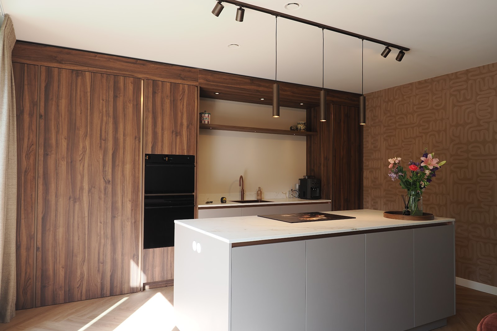
Geen keuken is hetzelfde. Dat is precies de bedoeling.
Strak zwart, warm notenhout of lichtblauw met messing knoppen. U bepaalt wat u mooi vindt, wij zorgen dat het past tot op de millimeter.
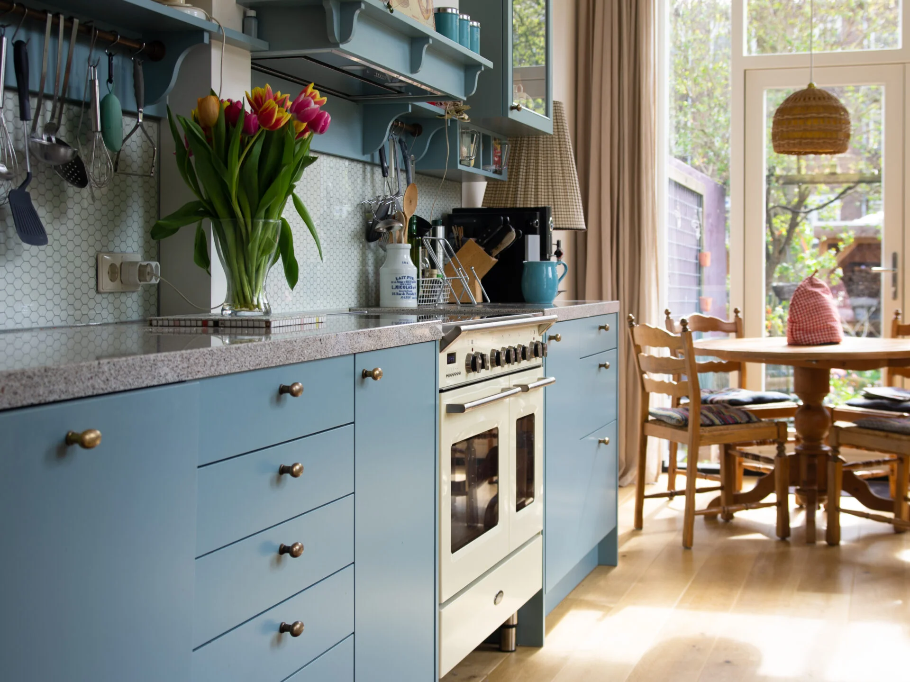
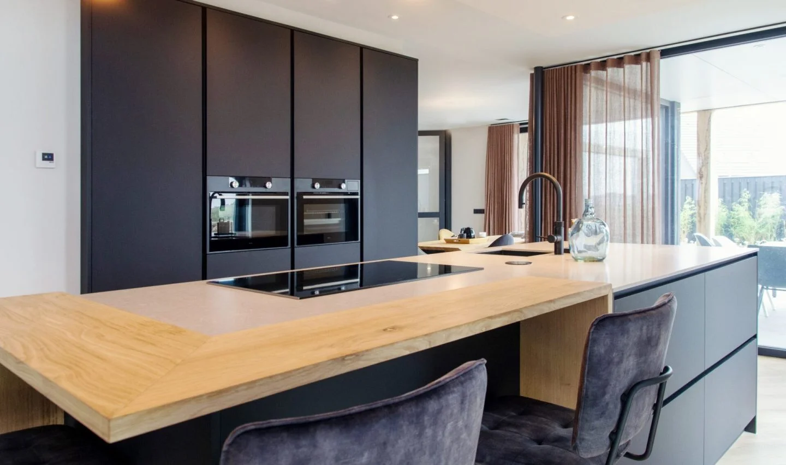
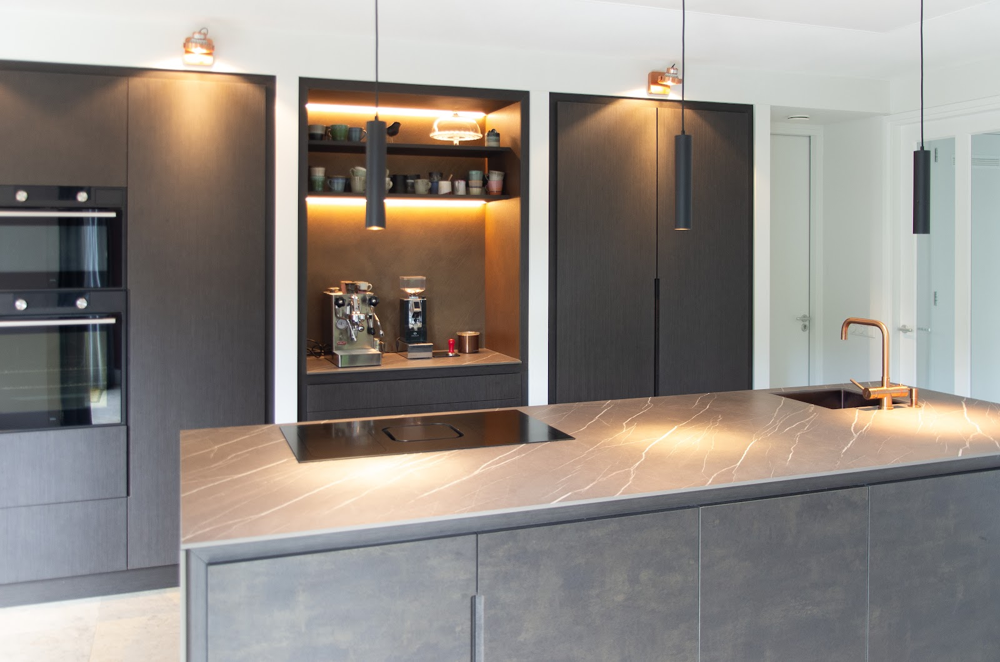
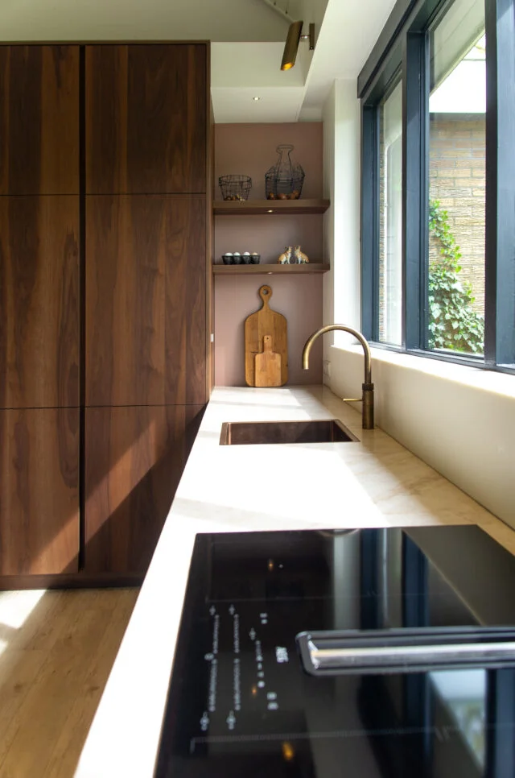
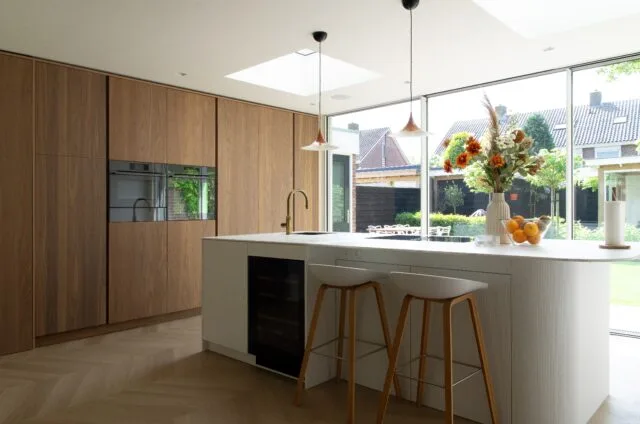
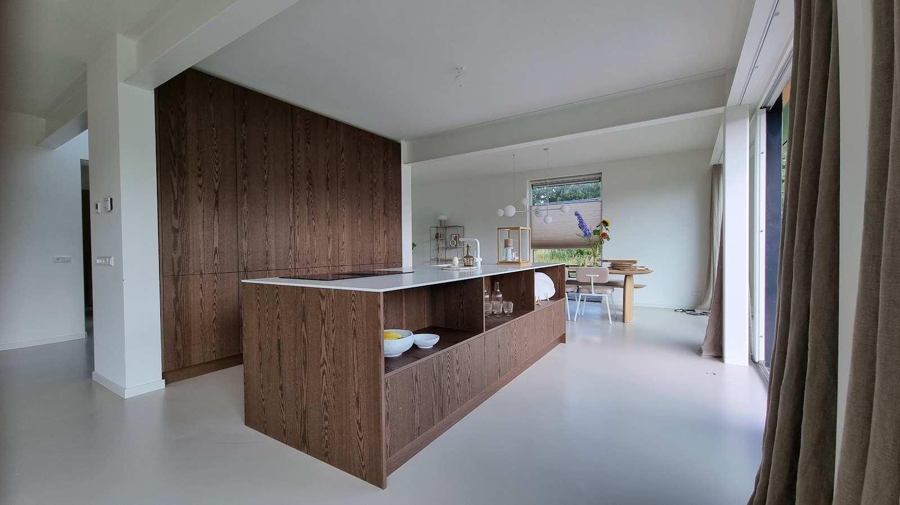
Van uw keukentafel tot de laatste la.
Maatwerk is voor ons geen vraag, het is onze standaard. Daarom houden we alles in eigen hand: ontwerp, werkplaats en plaatsing.
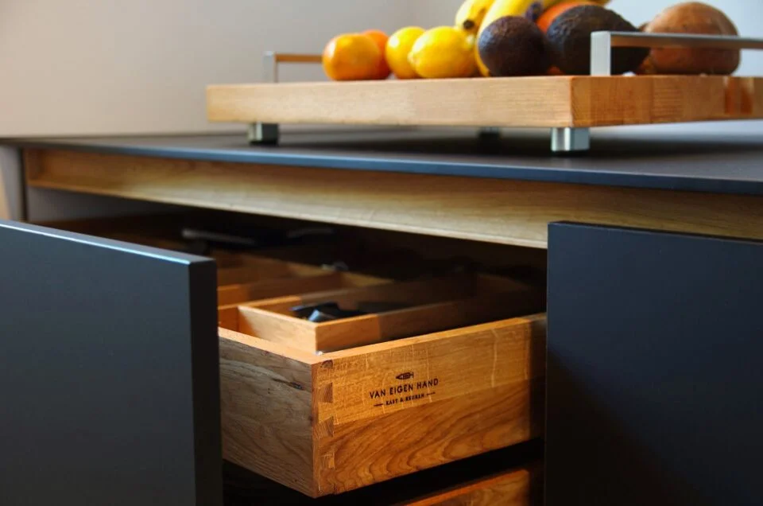
-
1
We beginnen bij u thuis
In een vrijblijvende afspraak aan uw keukentafel bespreken we uw wensen, smaak en hoe u kookt. De stijl en architectuur van uw woning zijn het vertrekpunt. Samen bepalen we de beste indeling, en we denken mee over materialen, kleuren, apparatuur en slimme oplossingen.
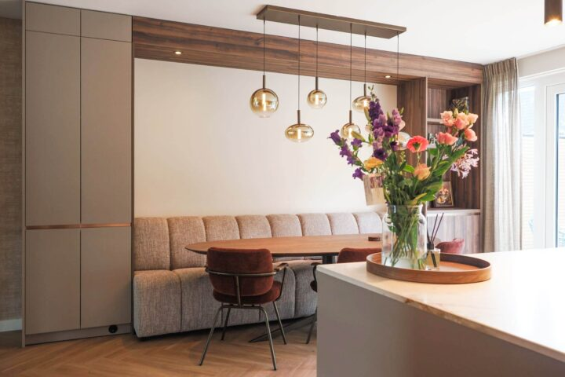
-
2
Het ontwerp maken we samen
Erna vertaalt uw ideeën naar een ontwerp op maat, met een realistische 3D impressie zodat u ziet wat u krijgt. In de studio kiest u samen met haar de materialen en details. Pas als u helemaal tevreden bent, gaan we verder.
-
3
Gemaakt en geplaatst door ons zelf
In onze werkplaats in Zwolle wordt alles op maat gemaakt, van hoogwaardige materialen en met aandacht voor elk detail. De montage bij u thuis doen we ook zelf. Zo weten we zeker dat alles precies wordt zoals we het samen bedacht hebben.
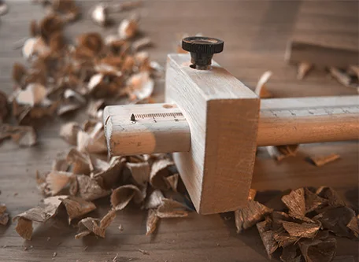
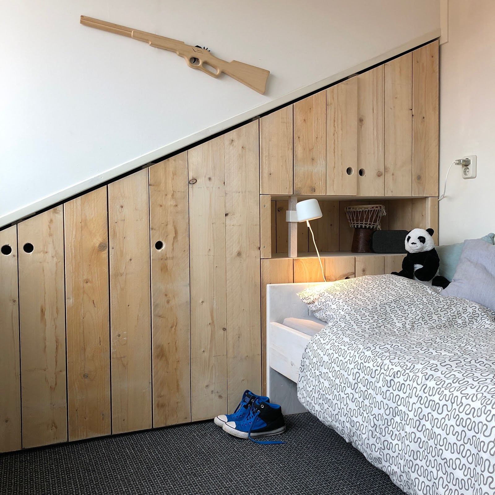
Ook uw kast, haard of zolder.
Ons vakmanschap houdt niet op bij de keuken. Kasten op maat, een haardombouw of een slimme oplossing onder de schuine kap: we laten alles naadloos op elkaar aansluiten. Ook de rest van het interieur nemen we graag mee in het ontwerp.
- Maatwerk
- Uw wensen zijn de kern van elk ontwerp.
- Uniek
- Uw interieur is niet hetzelfde als dat van de buren.
- Creatief
- Mooi én slim bedacht, buiten de kaders.
“Géén standaard, dat is mijn standaard.”
Gerrit Gerritsma
Van Eigen Hand werkt 100% onafhankelijk. We zijn niet gebonden aan merken of leveranciers, dus we leveren alle gangbare apparatuur en materialen. Passend bij uw wensen en uw budget, en altijd met oog voor kwaliteit. Uw keuken gaat tenslotte een hele tijd mee.
Ons team
Gerrit Gerritsma, Erna Gerritsma, Ton Bijsma, Gerdieneke van de Geest, Gerwin Harink en Anne Dasselaar.
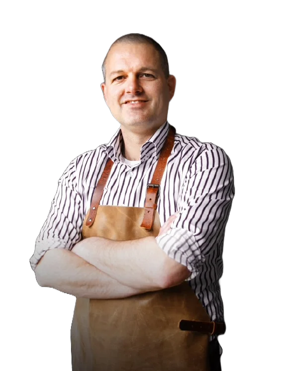
Wat klanten over hun keuken zeggen.
4,9 op Google, uit 38 reviews
“We zijn heel erg tevreden met onze nieuwe keuken van Van Eigen Hand! Erna heeft een uniek ontwerp bedacht dat Gerrit en zijn collega op maat, dus exact passend in de ruimte, heeft gemaakt. (...) Het resultaat mag er zijn, onze keuken is nu een echte woonkeuken geworden, waar we veel vaker zitten dan voorheen!”
“Nooit gedacht dat een maatwerk keuken betaalbaar en geheel naar wens zou kunnen zijn! Gerrit en Erna maken dit mogelijk. Prettig contact, altijd goed bereikbaar voor overleg en professioneel. Wij zijn heel blij met onze prachtige keuken!”
“Zeer positieve ervaring! Vakmensen! In het ‘reguliere’ keukenlandschap konden we niet slagen met onze wensen. Na één gesprek was het duidelijk. VAN eigen hand heeft ook alles IN eigen hand.”
“We hebben Gerrit ervaren als een prettige harde werker die ook alle kleine dingetjes heel precies en netjes afwerkt. Het is heel fijn dat er veel flexibiliteit is waardoor op het laatste moment ook nog dingetjes konden worden aangepast. We zijn superblij met het eind resultaat! Nog mooier dan we hadden bedacht.”
“Wij zijn ontzettend blij met onze keuken gerealiseerd door Gerrit en Erna. Het was een prettige samenwerking. Het contact was fijn en we zijn goed begeleidt in de keuzes die wij moesten maken qua blad, kastjes en indeling door Erna. Wij hadden nooit gedacht dat een maatwerk keuken (geheel naar onze wens) betaalbaar was”
Ontdek dat maatwerk betaalbaar kan zijn.
Erna komt graag bij u thuis langs voor een gratis en vrijblijvende afspraak. Bel ons, of stuur een berichtje.
06 57744309- gerrit@vaneigenhand.nl
- Werkplaats en studio
- Graham Bellstraat 35 C
8013 PL Zwolle - Openingstijden
- Maandag t/m vrijdag08:30 tot 17:00 Zaterdag en zondagGesloten